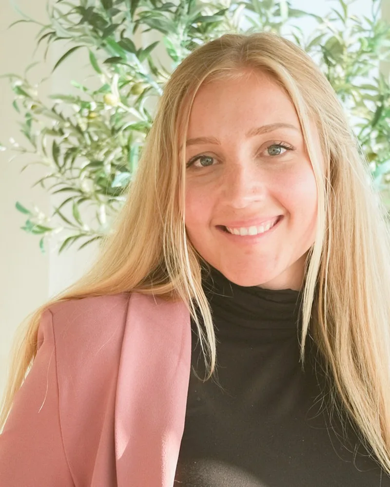
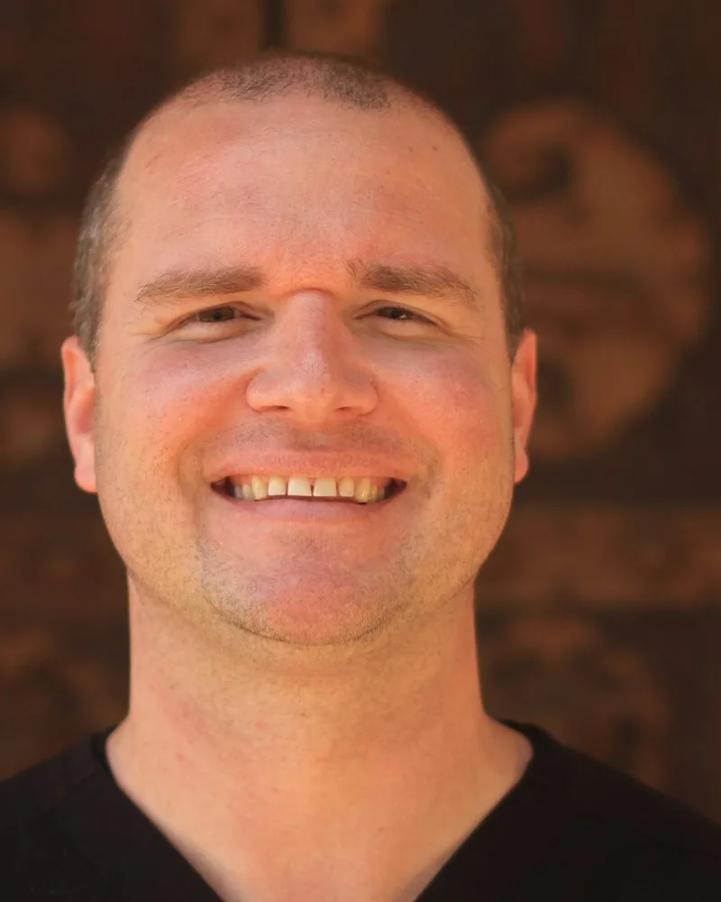
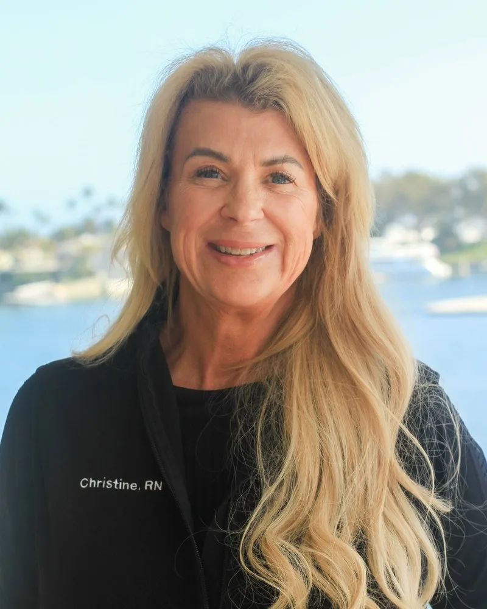
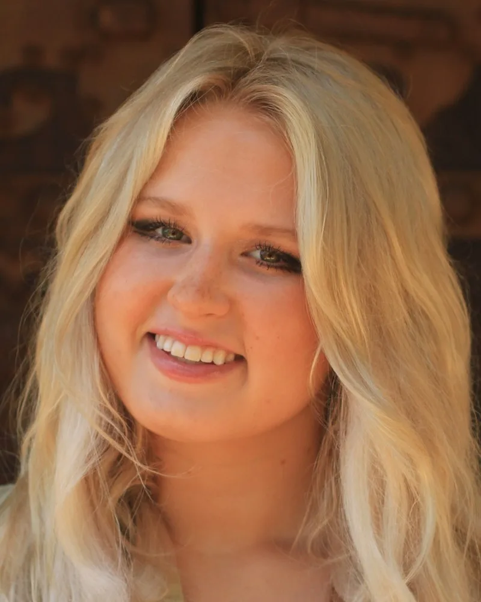
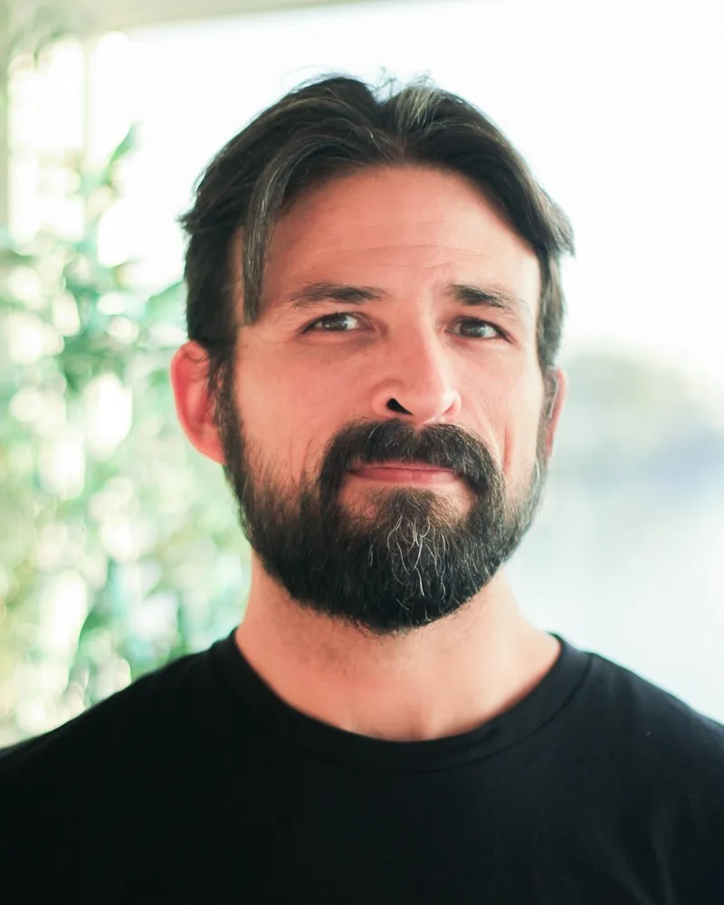
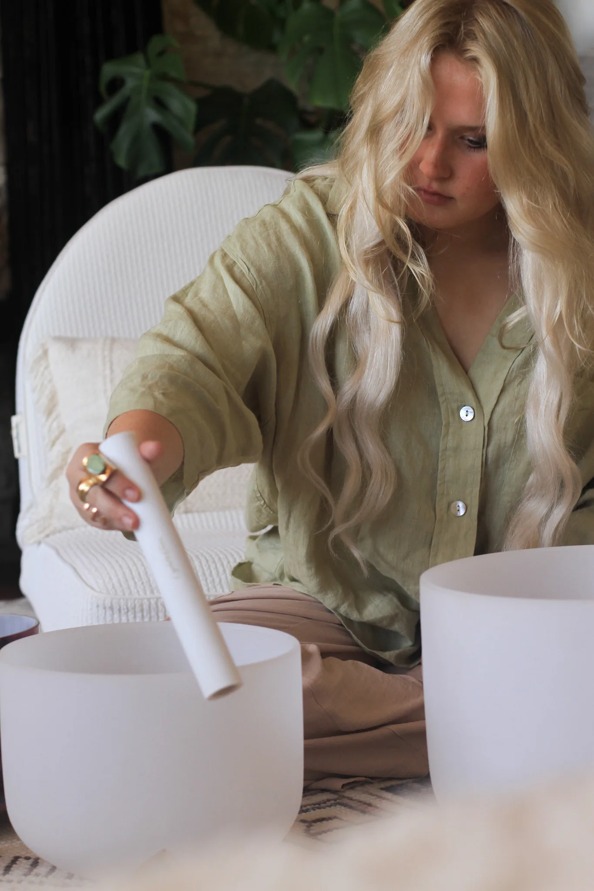
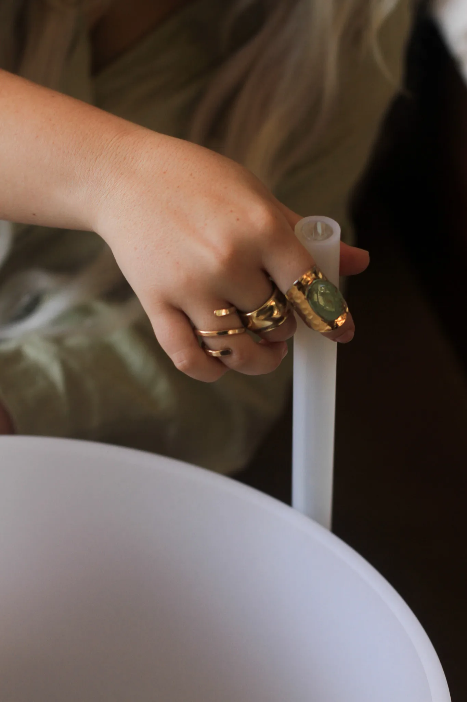

“I came in completely depleted — running on empty for years and not knowing it had another name. Three months later I feel like myself again for the first time in a long time.”— K.M., Newport Beach
Holistic primary medical care, preventative medicine, and ancient healing modalities — delivered to your home. Where groundbreaking clinical research meets the wisdom of time-tested practice.
Weekly gatherings open to the community — no membership required. Come once or make it a ritual.
Adrienne guides you through a subconscious meditation rooted in clarity and intentional action — creating space to hear yourself clearly and move toward the life you want to live.
Reserve Your SpotEach week holds a new theme and invites us to be truly known — sharing stories, writings, and moments from our lives with the Compound community. This is a space to be heard and to belong.
Reserve Your SpotWellness cannot be standardized. It requires understanding the full picture of your physiology, lifestyle, and demands — and designing care that reflects that complexity. Our approach seamlessly integrates timeless practices with groundbreaking science.
Personalization is the primary driver of effectiveness.
Clinical insight and data-driven assessments remove the ambiguity of traditional wellness trends.
True health is a multi-dimensional experience of body, mind, and spirit in harmony.
Three structured, in-home care pathways — each integrating holistic primary medicine, preventative protocols, and ancient healing modalities into a single coherent system. Delivered to you by a coordinated team of specialists who actually know you.
For those experiencing chronic stress, burnout, or nervous system dysregulation.
Outcome: Stability, regulation, and a restored baseline.
For those seeking resilience across sleep, energy, and physiological stability.
Outcome: Resilience, stability, and sustainable long-term health.
For high-functioning individuals seeking precision performance.
Outcome: Enhanced focus, efficient recovery, and long-term vitality.
At The Compound, clinical diagnostics and evidence-based protocols work alongside Reiki, structural integration, breathwork, and somatic practice. Not as alternatives — as complements. Every pathway is coordinated across your entire care team and delivered where you live.
A comprehensive understanding of your current state, goals, and physiological constraints.
A personalized pathway integrating the right modalities in the right sequence.
Coordinated sessions that build on one another — never fragmented.
Your pathway adapts as your system changes, ensuring continued alignment.
Every service, every practitioner, every session — in your home. No commute, no waiting rooms, no compromises.
Six deeply credentialed practitioners — spanning holistic primary medicine, structural care, IV therapy, sound healing, and concierge wellness programs — working together as one coordinated concierge ecosystem, delivered entirely in your home.

Co-Founder and Director of Holistic Services. Leading The Women's Cohort and Executive Cohort — nervous system regulation, clarity, and community-anchored transformation.
Science-based medicine blended with noninvasive, preventative care. UCI Med graduate specializing in detoxification, hormone balance, and root-cause resolution.

Trusted by elite athletes including the SF 49ers, LIV Golf Tour, and NHL. SOMA therapy for performance, recovery, and structural care.

25 years delivering personalized preventative care through IV therapy and targeted nutritional optimization — delivered as a rejuvenating ritual.

Sacred, ceremonial healing through sound baths, Reiki, yoga, and somatic movement. A doorway inward — a return to presence and peace.

Restores balance, alignment, and ease through fascia work — addressing chronic pain, postural imbalances, and movement efficiency.
The Compound partners with organizations, properties, and brands to deliver elevated, personalized wellness experiences without compromising precision or care.
Physiology-based wellness systems that support how teams perform under pressure.
Inquire About PartnershipBringing Precision Lifestyle Architecture directly to the guest — discreet, in-residence care aligned with your property.
Inquire About PartnershipOngoing, personalized care integrated into daily life — evolving as we come to know each resident.
Inquire About PartnershipPrecision preparation for the moments that matter most — so you can arrive fully present.
Inquire About PartnershipTrue wellness is not the absence of illness — it is the presence of vitality. Our practitioners span the full spectrum from clinical science to holistic embodied practice, unified around a single biological blueprint for each client.
Co-Founder and Director of Holistic Services. Leading The Women's Cohort and Executive Cohort — nervous system regulation, clarity, and intentional community for those ready to transform.
Science-based medicine blended with noninvasive, preventative care. UCI Med graduate specializing in detoxification, hormone balance, and root-cause resolution.
Trusted by elite athletes including the SF 49ers, LIV Golf Tour, and NHL. SOMA therapy for performance, recovery, and structural care.
25 years delivering personalized preventative care through IV therapy and targeted nutritional optimization — delivered as a rejuvenating ritual.
Sacred, ceremonial healing through sound baths, Reiki, yoga, and somatic movement. A doorway inward — a return to presence and peace.
Restores balance, alignment, and ease through fascia work — addressing chronic pain, postural imbalances, and movement efficiency.
Holistic Concierge Family Physician — blending the precision of science-based medicine with the wisdom of natural healing.
Book a Consultation"A method that restores your body and allows it to improve with aging. Feel better than ever."
Dr. Angela Colombo is a holistic concierge physician who blends the precision of science-based medicine with the wisdom of natural healing. A graduate of the University of California, Irvine School of Medicine, Dr. Colombo brings extensive training in clinical medicine together with a deep commitment to noninvasive, nontoxic, and preventative care.
Her expertise lies in detoxification of heavy metals, hormone balance, and restoring the body's innate ability to heal itself. Through her family-centered practice, Dr. Colombo takes a comprehensive, personalized approach — identifying the root causes of chronic symptoms rather than masking them with prescriptions.
She has helped countless patients safely reduce or eliminate long-term medication use, reverse chronic conditions, and regain lasting vitality. Guided by the belief that true health comes from balance, she integrates the highest medical standards with holistic, evidence-based therapies to deliver transformative care for individuals and families alike.
Dr. Colombo's approach to family medicine goes beyond managing symptoms — it is about understanding the whole person. Each consultation is a deep exploration of your unique physiology, lifestyle, history, and goals, resulting in a care plan as individual as you are.
In-depth evaluation of physiology, hormones, toxin load, and lifestyle to identify the root of chronic concerns.
Medically guided heavy metal and environmental toxin removal to restore cellular function.
Precision restoration of hormonal equilibrium through natural, science-backed interventions.
Proactive, individualized care designed to preserve vitality and prevent chronic disease before it begins.
SOMA Therapist — trusted by elite athletes to deliver next-level care that prioritizes performance, precision, and longevity.
Book a SessionOfficial physician for the San Francisco 49ers, LIV Golf Tour, and the NHL.
Trusted by elite athletes, including athletes from the San Francisco 49ers and the LIV Golf Tour, Dr. Adams provides next-level care that prioritizes performance, precision, and longevity. Whether recovering from acute injury or pushing the boundaries of athletic potential, his clients turn to him for lasting, measurable results.
Dr. Adams' signature SOMA therapy protocol is grounded in four key outcomes: rapid injury recovery, surgical recovery acceleration, performance optimization, and preventative maintenance. His approach integrates fascial release, alignment work, and functional biomechanical assessment into a cohesive system.
Each session is a highly personalized assessment and treatment — identifying structural imbalances, releasing fascial restriction, and restoring optimal movement patterns. Care evolves as your demands shift, ensuring continued alignment between your output and your capacity.
Restore tissue integrity and joint mobility through integrated fascial release and alignment work.
Reduce inflammation, re-establish movement patterns, and accelerate healing post-procedure.
Enhance power, mobility, and resilience through functional biomechanical assessment and corrective protocols.
Sustain high performance and prevent re-injury through proactive structural body tuning.
IV Drip & Injection Therapy — delivering vitamins, minerals, and hydration directly to the bloodstream as a rejuvenating ritual, not just a medical procedure.
Book a Session25 years of expertise in personalized preventative care and nutritional optimization.
IV and drip infusion therapy delivers vitamins, minerals, and hydration directly into the bloodstream, allowing for immediate absorption and rapid results. Unlike oral supplements, which lose potency through digestion, IV therapy ensures that the body receives the full benefit of every nutrient.
At The Compound Wellness, IV and drip therapy are more than a medical procedure — they are a rejuvenating ritual. Under Christine's expert care, treatments are delivered with precision, comfort, and luxury in mind. She uses advanced vein finder technology for accurate placement, along with a gentle numbing spray to minimize discomfort. Every detail has been considered, from warm towels and serene settings to premium add-ons that enhance the experience.
Christine combines her extensive nursing background with an intuitive sense of care that puts clients completely at ease. Each infusion is carefully formulated to meet your unique needs — whether you are restoring after travel, preparing for an athletic event, or simply replenishing for optimal wellness.
Restore cellular energy and accelerate recovery from physical and mental demand.
Targeted infusions to strengthen immunity and support the body's natural defenses.
Deep hydration and cellular cleansing to restore optimal function.
Pre- and post-event infusions tailored to your athletic and wellness demands.
Structural Integrationist — restoring balance, alignment, and ease within the body through precise hands-on fascia therapy.
Book a SessionHelping the body move with strength, stability, and natural grace.
Branden Carrisalez is a Structural Integrationist specializing in restoring balance, alignment, and ease within the body through precise hands-on therapy. With a deep understanding of anatomy and movement, Branden helps clients address chronic pain, postural imbalances, and limited range of motion by working directly with the body's connective tissue — the fascia.
His approach supports not only physical relief but also a greater sense of awareness, allowing the body to move with strength, stability, and natural grace.
Structural Integration is a form of bodywork that focuses on realigning the body's structure in relation to gravity. Through sessions that release tension and reorganize the fascia, this work improves posture, reduces strain patterns, and enhances overall movement efficiency.
Branden's sessions are ideal for athletes, those recovering from injuries, individuals with desk-related pain or poor posture, and anyone seeking a more fluid, effortless relationship with their body.
Address the structural root causes of persistent pain through targeted fascia work and realignment.
Restore natural alignment and eliminate compensatory strain patterns developed over time.
Support tissue recovery and movement quality for athletes training at high output.
Fully equipped mobile sessions delivered to your home throughout south Orange County.
Holistic Wellness Integrator — guiding sacred embodiment through sound healing, Reiki, and yoga. A doorway inward, a return to presence.
Book a SessionDevoted to guiding others through sacred embodiment — cleansed, grounded, and reawakened.
Coco Poovey is a dynamic and intuitive healer devoted to guiding others through sacred embodiment. Trained in sound healing, Reiki, and yoga, Coco creates ceremonial spaces where individuals can reconnect with themselves — cleansed, grounded, and reawakened.
Her offerings include immersive sound baths, transformational Reiki sessions, and private, in-home yoga experiences. Whether moving through breath and posture, resting in the sacred resonance of bowls and drums, or receiving gentle energetic realignment, each session is a doorway inward — a return to presence, peace, and the truth of one's being.
Each session with Coco is tailored to where you are. She meets you in your current state — whether you need grounding, release, energetic clearing, or simply stillness — and creates an experience that honors exactly that. No two sessions are the same.


Immersive ceremonial experiences using crystal bowls, drums, and sacred instruments to restore resonance and ease.
Gentle energetic realignment to release what is held and restore the body's natural flow.
In-home yoga experiences tailored to your body, goals, and current state — intimate and deeply personalized.
Body-based practices that integrate the nervous system and create lasting patterns of ease and regulation.
Co-Founder and Director of Holistic Services — guiding individuals and small groups toward nervous system regulation, clarity in decision-making, and sustainable transformation through community-anchored care.
Inquire"To be known is the beginning of every transformation."
Adrienne Kruse is the Co-Founder of The Compound Wellness and its Director of Holistic Services. Her work is grounded in the belief that lasting change requires being truly known — not just assessed — and that the conditions for transformation are built in relationship, community, and consistent, personalized support.
Adrienne leads The Compound's cohort programming, designing immersive three-month experiences for women navigating burnout, adrenal fatigue, and caretaking demands, as well as for executives seeking actionable clarity and momentum in high-stakes roles. Her approach integrates nervous system regulation, somatic awareness, and structured support into every program she leads.
The cohort model exists because Adrienne believes transformation is more sustainable in community. Each cohort combines weekly 1-on-1 sessions, group programming, open office hours, and access to The Compound's full ecosystem of wellness events — creating an environment where participants are held, challenged, and known over time.
For women experiencing burnout and adrenal fatigue — especially mothers, women supporting someone in active addiction, and caregivers who give much and receive little. This cohort is for those who do the work of holding others and need to be held themselves.
Includes: Weekly 1-on-1 session · Weekly group session · Access to all Compound events · Weekly office hours where you're free to bring a friend and simply live in community.
For those in executive leadership who want precise direction on decision-making and momentum forward. Leaders wear many hats — at the organization, at home, and as the financial anchor of a family. This cohort brings clarity and focus across all of them. Available remote or hybrid.
Includes: Weekly 1-on-1 with Adrienne · Group session · Office hours for networking (bring a colleague or friend) · Access to all wellness events.
Weekly private sessions with Adrienne — deeply personalized support for nervous system regulation, clarity, and intentional growth.
Weekly cohort gatherings that combine education, practice, and shared experience — building the community that makes change sustainable.
Unstructured time to live in community. Bring a friend. Ask a question. Breathe. A space that belongs to you and is not on the clock.
Full access to The Compound's ecosystem of wellness events throughout your three-month cohort commitment.
Transformation anchored in community, clarity, and being truly known.
From a 24/7 personal concierge physician to holistic memberships, individual sessions, and transformative cohort programs — a full spectrum of care delivered to your home.
A 24/7 personal health experience with Dr. Angela Colombo — your physician, advocate, and medical team navigator.
Full access to all holistic events, in-home wellness sessions, and a curated community of like-minded people.
Every clinical and holistic service available as a standalone, in-home session — no membership required.
The Women's Cohort and Executive Cohort — small, intentional groups led by Adrienne Kruse.
Take the assessment and we'll design the right starting point for you.
A 24/7 personal health experience from the comfort of your home. Dr. Colombo acts as the central nervous system of your entire medical picture — not keeping you normal, but optimal.
Schedule Free ConsultMost physicians keep you within range. Dr. Colombo's goal is different: to understand the full picture of your physiology, your lifestyle, and every provider in your care — and build a health plan that actively moves you toward the best version of yourself.
She has cultivated personal relationships with the top practitioners across every discipline in Orange County. When you need a specialist, she knows who to call — and makes the connection on your behalf.
Dr. Colombo looks at the whole picture across every provider and enacts a coordinated health plan — not fragmented care, but one unified strategy.
Available around the clock — from your home, and while you travel via Telehealth. Your physician is always reachable.
A network of the top practitioners in the area, a team to navigate you through the healthcare system, and a physician with an overall view of what is best for you.
Everything delivered to your home — no commute, no waiting rooms, no compromise on quality.
Comprehensive head-to-toe physical conducted in your home, at your pace.
Blood drawn from the comfort of your home — full panels, hormone panels, and specialty labs.
Medical-grade IV therapy for energy, immunity, detoxification, and recovery.
In-home cardiac monitoring and electrocardiograms, read and interpreted directly.
In-home diagnostic imaging — without the hospital setting or the wait.
Non-surgical skin resurfacing and tightening — medical-grade results delivered privately.
Ongoing prescription management and medication optimization — without the friction.
In-home prenatal care, monitoring, and support throughout pregnancy — personalized, unhurried, and delivered where you're most comfortable.
Comprehensive postpartum care — hormone recovery, mood support, nutrition, and physical restoration in the weeks and months after birth.
Full consultations while traveling — Dr. Colombo stays with you wherever you are.
Dr. Colombo holds admitting privileges at Hoag, Providence, and Saddleback Memorial Care. In the event of hospitalization, she acts as your physician's consultant — ensuring continuity, advocacy, and the highest standard of care throughout your stay.
Her network of top-tier specialists means that when you need a referral, you don't navigate alone. She makes the call personally.
Meet Dr. ColomboIn-home evaluation — labs, physical, history, and goals. Your complete clinical picture, established on day one.
A tailored protocol built around your physiology and long-term goals — not a wellness template.
24/7 availability, regular check-ins, and continuous refinement as your body and life evolve.
Dr. Colombo communicates with every specialist involved — so nothing falls through the cracks.
Begin with a complimentary 15-minute consultation.
A membership that grants access to all of The Compound's holistic events, in-home wellness services, and a community of like-minded people building something meaningful together.
Inquire About MembershipThe Holistic Enclave is designed for those who want holistic wellness woven into their daily life — not just occasional appointments. Members receive access to all recurring community events, priority booking for in-home sessions, and a curated network of people who are taking their wellbeing seriously.
Private yoga, massage, breathwork, and meditation — delivered to your home by our practitioners, prioritized for Enclave members.
Full access to every holistic event The Compound produces — sound baths, community circles, seasonal gatherings, and workshops.
A curated network of members navigating similar seasons of life — building real friendships through shared practice.
In-home yoga tailored to your body and goals — intimate, personal, never a class setting.
Therapeutic massage sessions in your home for recovery, restoration, and nervous system regulation.
Guided breathwork for stress release, emotional integration, and nervous system reset.
Private guided meditation — tools and practices that become part of your daily life.
Immersive ceremonial sound healing — private in-home or at group community events.
Priority access to every event The Compound hosts — seasonal gatherings, workshops, and community circles.
What a month inside the Holistic Enclave looks like — always evolving with the season and the community.
Private Yoga Session
In-home, tailored to where you are this week — opening, grounding, or restorative.
Monthly Sound Bath
Ceremonial sound bath with Coco — members gather in community for a shared evening of healing.
Breathwork Session
Guided breathwork for nervous system regulation and emotional release — in-home, private.
Community Circle
Informal gathering — members connecting, sharing, and simply being together without agenda.
Massage Session
Therapeutic in-home massage — recovery, restoration, and deep release.
Seasonal Wellness Workshop
Rotating format — nutrition, sleep science, somatic practice, or movement education.
Meditation Session
Private guided meditation — building a practice that integrates into everyday life.
Member Experience
A curated experience exclusive to members — sunset sound baths, Reiki evenings, nature retreats.
A membership for those who want wellness as a way of life — not just a quarterly appointment.
Every clinical and holistic service available as a standalone, in-home experience. Book what you need, when you need it — no membership required.
Every service at The Compound is available as a standalone experience or as part of a structured pathway. When combined, they function as a unified system — not fragmented treatments, but a coordinated approach to lasting wellness.
Comprehensive, root-cause family medicine — hormone balancing, detoxification, and personalized preventative care without the rush of conventional practice.
Direct-to-bloodstream vitamins, minerals, and hydration for energy, immunity, detoxification, and recovery — delivered as a rejuvenating ritual.
Targeted vitamin and therapeutic injections customized to your specific clinical needs and wellness goals.
Elite-level structural therapy for injury recovery, surgical recovery, performance optimization, and preventative body maintenance — trusted by professional athletes.
Hands-on fascia work to restore postural alignment, resolve chronic pain, and improve movement efficiency. In-home sessions available throughout south Orange County.
Immersive ceremonial experiences using crystal bowls, drums, and sacred instruments to restore resonance and calm the nervous system.
Gentle energetic realignment sessions to release what is held and restore the body's natural flow.
In-home yoga experiences tailored to your body, goals, and current state — deeply personalized.
Body-based practices that integrate the nervous system and create lasting patterns of ease and regulation.
Guided breathwork for nervous system regulation, stress release, and somatic integration.
Start with an assessment — we'll design the right combination for you.
Personalized, multi-modal care designed to deliver measurable, lasting change. Each pathway integrates clinical insight and embodied practices to guide you from your current state to where you want to operate.
For chronic stress, burnout, and nervous system dysregulation.
Outcome: Stability, regulation, restored baseline.
For inconsistent energy, sleep, and overall physiological health.
Outcome: Resilience, stability, sustainable wellness.
For high-functioning individuals seeking precision performance.
Outcome: Enhanced focus, recovery, long-term vitality.
Every pathway follows the same rigorous four-step methodology — ensuring care is continuously refined as your system evolves.
A comprehensive understanding of your physiology, lifestyle, and goals.
A personalized pathway built from the right combination of modalities.
Coordinated sessions that build on one another — never fragmented.
Your pathway evolves as your system responds and progresses.
A structured pathway to restore balance, regulate your system, and rebuild your foundation. Designed for those experiencing chronic stress, burnout, or nervous system dysregulation.
The Reset brings your system out of a prolonged state of stress and into regulation. Rather than treating symptoms in isolation, this pathway stabilizes your nervous system, restores internal balance, and creates the conditions for sustainable recovery.
Every element is coordinated, intentional, and built to support how your system actually heals.
An example of how a Reset pathway might be structured. Every client's architecture is unique — designed after your full assessment and refined as your system responds. The shaded rows mark the key inflection points in your recovery.
| Phase | Clinical FoundationDr. Angela Colombo | Structural & SomaticBranden · Dr. Adams | Restoration & EnergyChristine · Coco |
|---|---|---|---|
| Wk 1–2Assess | Holistic MDRoot-cause consultationComprehensive intake — labs, history, lifestyle, hormonal baseline | SOMA TherapyStructural evaluationBiomechanical mapping — where the body is holding and compensating | IV TherapyFirst IV sessionBaseline restoration — cellular hydration, adrenal and immune support |
| Wk 3–5Regulate | Holistic MDProtocol refinementAdjust supplementation, sleep support, and stress-response interventions | Structural IntegrationFascia release seriesWeekly sessions targeting areas holding chronic tension patterns | Holistic WellnessBreathwork + sound bathGuided nervous system regulation — somatic practices for downregulation |
| Wk 6–8Restore | Holistic MDProgress reviewLab re-evaluation, energy assessment, pathway recalibration | SOMA + StructuralIntegration workDeepening sessions as the nervous system settles and releases | IV + HolisticEnergy optimizationNAD+, B-complex, mitochondrial support for energy recovery |
| Wk 9–12Integrate | Holistic MDMaintenance protocolLong-term plan — what continues, what reduces, what to monitor | MovementCoco joinsYoga and somatic movement as the system stabilises and strengthens | OngoingRhythm establishedMonthly maintenance or transition into The Foundation when ready |
"Before we recommend anything, we take the time to understand you — your physiology, your history, your life. The Reset is where that understanding becomes a plan."
Once your system has stabilised and your baseline is restored, the next step is building the resilience to sustain it. The Foundation picks up exactly where The Reset leaves off.
A structured pathway to build resilience, stabilize energy, and support long-term health. Designed for those seeking consistency, strength, and a more sustainable way to operate.
The Foundation establishes the systems your body relies on to function well over time. This pathway focuses on stabilizing key areas of sleep, energy, stress response, and recovery so that your health becomes consistent, not reactive.
It is where short-term improvement becomes long-term structure.
An example of how a Foundation pathway might be structured. The architecture below reflects the typical progression — stabilise first, strengthen next, build systems last.
| Phase | Clinical FoundationDr. Angela Colombo | Structural & MovementBranden · Coco | Restoration & EnergyChristine · Coco |
|---|---|---|---|
| Wk 1–3Baseline | Holistic MDComprehensive assessmentHormonal, metabolic, and lifestyle review — full diagnostic baseline | Structural IntegrationPostural evaluationIdentifying structural contributors to fatigue and energy drain | IV TherapyFoundation IV seriesTargeted IV for sleep, energy restoration, and immune baseline |
| Wk 4–7Stabilise | Holistic MDProtocol implementationHormonal and metabolic support, nutritional optimisation, sleep protocol | Structural IntegrationAlignment seriesFascia work to address postural patterns affecting energy and recovery | Holistic WellnessRegulation practicesBreathwork and somatic sessions for nervous system stabilisation |
| Wk 8–11Strengthen | Holistic MDProgress evaluationLab re-check, energy and sleep assessment, protocol refinement | MovementSomatic Movement & YogaCoco introduces movement practices to build stability and capacity | IV + HolisticPerformance supportIV optimisation for sustained energy and cellular resilience |
| Wk 12–16Structure | Holistic MDMaintenance planSustainable clinical rhythm — proactive care designed to hold the gains | Movement + StructuralIntegrated maintenanceBi-weekly sessions sustaining structural alignment and movement quality | OngoingRhythm establishedMonthly maintenance or transition into The Elevation when ready |
"The Foundation pathway is where consistency becomes possible. We build the systems your body runs on — so that feeling well stops being something you chase, and starts being something you live."
Once a strong foundation is established, many clients move into The Elevation to further refine performance, sharpen cognitive output, and optimise recovery at a higher level.
A pathway designed to support how you function every day.
A structured pathway to refine performance, enhance recovery, and elevate how you operate. Designed for individuals who are functioning well — and want to perform at a higher level.
The Elevation is designed for those who have established a strong foundation and are ready to refine how they perform, recover, and sustain energy. This pathway moves beyond baseline health — focusing on precision, efficiency, and long-term vitality.
This is where wellness becomes performance, and performance becomes sustainable.
An example of how an Elevation pathway might be structured. This is precision work — the architecture is built around your specific performance demands, recovery patterns, and long-term vitality goals.
| Phase | Advanced ClinicalDr. Angela Colombo | Performance & StructureDr. Adams · Branden | Recovery & RefinementChristine · Coco |
|---|---|---|---|
| Wk 1–2Map | Holistic MDAdvanced diagnosticsComprehensive labs — hormonal, metabolic, cognitive markers, longevity panels | SOMA TherapyPerformance biomechanicsStructural efficiency mapping — how the body moves under load and demand | IV TherapyPerformance IV baselineCalibrated IV for cognitive performance, recovery speed, and cellular health |
| Wk 3–6Optimise | Holistic MDPrecision protocolTargeted interventions for cognition, energy regulation, and hormonal precision | SOMA + StructuralPerformance maintenanceStructural and recovery work calibrated to your output demands and schedule | MovementPerformance trainingCoco's yoga and somatic movement — mobility, grounding, and sustainable output |
| Wk 7–10Refine | Holistic MDBiomarker reviewDeep re-evaluation — refining protocols based on measurable performance data | Structural + SOMARecovery architectureOptimising the body's ability to recover from high-output periods efficiently | IV + HolisticNAD+ optimisationAdvanced IV protocols targeting mitochondrial function and cognitive clarity |
| OngoingSustain | Holistic MDQuarterly reviewsProactive clinical care — ahead of demands, not reactive to them | Performance CareOngoing maintenanceFlexible scheduling around travel, events, and high-demand periods | Full ecosystemContinuous evolutionCare adapts as your performance goals and life demands evolve |
"Elevation is not about doing more. It is about removing the friction between where you are and where you know you can be — so that your highest functioning becomes your consistent baseline."
A precision system designed to refine how you perform and feel.
The Compound Wellness partners with organizations, properties, and communities to deliver elevated, personalized wellness experiences. The clinical precision remains identical — only the delivery adapts.
Physiology-based wellness systems for high-performing teams — moving beyond isolated workshops into cohesive, integrated care.
Explore CorporateBringing Precision Lifestyle Architecture directly to the guest — discreet, in-residence wellness seamlessly aligned with your property.
Explore HotelsOngoing, personalized care integrated into daily life — becoming more precise the longer we know each resident.
Explore ResidentialPrecision preparation for the moments that matter most — so you can arrive feeling calm, present, and fully yourself.
Explore WeddingsA concierge wellness partner delivering integrated, physiology-based systems for performance, recovery, and resilience. Designed for organizations that understand the link between how people feel and how they perform.
Inquire About PartnershipMost corporate wellness programs address symptoms — meditation apps, catered lunches, yoga on Fridays. The Compound goes deeper: we address the underlying physiology of chronic stress, dysregulation, and depletion. When your people are truly well, performance follows naturally.
Cognitive clarity, emotional regulation, and decision-making quality are all downstream of physiological state. We address the root.
Sessions delivered at your office, your team's homes, or a venue of your choosing. No logistics burden on your HR team.
We track engagement, self-reported recovery, and absenteeism metrics — so the ROI on your investment is visible and concrete.
Interactive workshops grounded in stress physiology, nervous system regulation, and recovery science. Teams leave with frameworks they actually use — not information they forget by Monday.
Half-day or full-day · On-site delivery
Applied group sessions led by our practitioners — combining structural release, breathwork, and sound healing to move teams from depletion into restoration. Designed for end-of-quarter or high-pressure periods.
60–120 min · Any size group
For leadership teams: private, coordinated care from the full Compound ecosystem. Clinical support, structural therapy, IV optimization, and recovery protocols — on demand, at home or office.
Ongoing retainer · Fully customized
Multi-day off-site experiences that move teams from understanding to transformation. We design and deliver the entire wellness arc — from clinical assessment to embodied practice to recovery.
1–3 day retreats · Full design included
A monthly cadence of education and practice sessions keeping your team connected to their wellbeing throughout the year — not just at the annual offsite.
Monthly commitment · Flexible format
For organizations with specific cultures, demographics, or outcomes in mind — we design from scratch. Everything from a single workshop to a year-long integrated wellness architecture.
Custom scope · Contact for details
Quarterly intensives (education + embodiment), access to group recovery sessions, and an annual retreat planning consultation.
Ideal for teams of 10–30 · Quarterly engagement
Monthly sessions (education + embodied practice), priority service access, leadership-focused support, and annual retreat design and delivery.
Ideal for teams of 15–75 · Monthly engagement
Fully customized programming, executive 1:1 care from the complete Compound ecosystem, on-demand session access, and integrated annual wellness architecture.
Fully bespoke · Ongoing partnership
A tailored approach to performance, recovery, and resilience — starting with a conversation.
Precision Lifestyle Architecture delivered discreetly to your guests — in their room, at their pace, at a level of care that reflects the standard of your property. Not a spa menu. An ecosystem.
Inquire About PartnershipRather than a traditional spa offering, we provide curated, in-room and on-property care designed to meet guests where they are — and leave them feeling better than when they arrived. We operate as a seamless extension of your property's standard. Discreet, refined, and fully coordinated with your concierge team.
Every practitioner is trained in hospitality protocols. Every experience is designed to feel effortless for the guest.
IV rehydration, structural release, and nervous system regulation designed for guests arriving after long flights or demanding travel. Available same-day from arrival.
Sound bath, Reiki, yoga, and bodywork delivered privately in-suite — or in a curated on-property space. Bookable through your concierge team or directly via The Compound.
Structural therapy, SOMA work, and personalized recovery sessions for athletes, executives, and high-output guests who need to perform during their stay.
Dr. Colombo's concierge medicine services available to guests — including diagnostic consultations, IV therapy, and preventative care — delivered with complete discretion.
Curated group wellness experiences for corporate buyouts, incentive trips, and luxury retreats. We design the programming; your team delivers the hospitality.
For properties with returning guests or members: an ongoing wellness program that evolves with each visit, building on what we learn about each individual over time.
We work either as a named Compound Wellness experience within your property, or as a fully white-labeled in-room wellness program under your brand. Either way, the care is the same — only the presentation changes.
We handle all practitioner coordination, scheduling, and client communication. Your concierge team simply connects the guest to us.
A conversation takes fifteen minutes. Let's explore what The Compound can bring to your property.
Ongoing, deeply personalized care integrated into the daily rhythm of your community. Not a program your residents opt into — a standard of living they come to expect.
Inquire About PartnershipThe highest-quality residential communities offer access to extraordinary spaces. The Compound adds something rarer: access to extraordinary care. We become the wellness infrastructure for your community — the practitioners your residents rely on, the system that keeps them well and present for the life they've built.
Unlike one-time spa visits, ongoing Compound care becomes more effective over time as practitioners come to deeply know each individual.
Everything comes to the resident — in their home, at their schedule, with full privacy. No shared spaces, no waiting rooms.
From clinical primary care to ancient healing modalities — all under one coordinated system, available to every resident in the community.
Dr. Colombo's concierge family medicine practice — available to residents for preventative care, diagnostics, hormonal support, and root-cause health management. No waiting rooms. No rushed appointments.
Dr. Adams and Branden available for structural integration, performance recovery, and ongoing body maintenance — keeping residents moving freely and without pain.
Christine's IV therapy program available on a regular schedule — keeping residents energized, immune-strong, and physiologically supported through the demands of their lives.
Coco's ceremonial healing and yoga sessions — available privately in-home, or as curated community experiences that bring residents together in a shared practice.
Adrienne's cohort programming available to residents — curated three-month community experiences supporting nervous system regulation, clarity, and transformation for women and executives alike.
Monthly community events — sound baths, breathwork circles, movement workshops — that build connection while building health. Branded as a Compound x [Your Property] experience.
We offer two structures: a community-level retainer that gives all residents access to a defined set of services at a negotiated community rate, or a la carte access where residents book independently through The Compound at their own discretion.
Most communities opt for a hybrid — core services included as a community benefit, with premium individual care available on request.
"Care That Evolves With You — Because You Are Known."
Over time, care becomes more informed, more precise, and more impactful. This is the difference between occasional support and a truly integrated system that deepens the longer it runs.
A personalized approach to ongoing care — designed around your residents, your culture, and your standards.
Personalized care designed to support how you look, feel, and arrive on your wedding day — so you can be fully present for every moment of it. Not a beauty treatment. A physiological preparation.
Inquire About Wedding ExperiencesMost wedding preparation focuses on how you look. The Compound focuses on how you feel — your nervous system, your energy, your presence. Because the version of you that everyone will remember is not a dress or a suit. It is the radiance, the calm, and the aliveness that comes from being genuinely well.
A structured preparation pathway beginning 8–12 weeks before your wedding — addressing stress, sleep, skin, hormonal balance, and nervous system regulation.
A grounding, ceremonial experience designed to settle the nervous system and bring you fully into your body before the day begins.
Post-event restoration — so the first days of your marriage feel like rest, not recovery from a sprint.
A structured, multi-modal pathway beginning months before your wedding. Dr. Colombo oversees a clinical foundation — hormonal balance, adrenal support, skin health from within. Structural sessions with Branden address postural tension accumulated from planning stress. IV therapy with Christine builds radiance, immunity, and energy reserves.
As the event approaches, Coco leads sound bath and Reiki sessions designed to downregulate the nervous system and restore presence — helping you feel graceful, grounded, and completely at ease in your body.
A private morning-of experience — breathwork, sound, and gentle Reiki — designed to settle any remaining nerves and bring you into full presence before the ceremony. Available for the couple, the bridal party, or both. Delivered at your venue or home.
The day after your wedding, your system needs as much care as before it. IV restoration with Christine, a structural release session with Branden, and a restorative yoga session with Coco. So your honeymoon begins from a place of genuine restoration — not exhaustion.
Our comprehensive wedding package spans 8–12 weeks and includes sessions with Dr. Colombo, Christine, Branden, and Coco — coordinated as a single pathway with one point of contact and full practitioner communication. Pricing is customized to the scope of services and timeline.
Sessions can be delivered at your home, your venue, or both — throughout Orange County and surrounding areas.
"The goal is simple — that on your wedding day, you feel so fully present, so genuinely at ease, that the only thing left to do is be there."
— The Compound Wellness
A personalized approach to preparation, presence, and recovery — for the day you'll remember forever.
True wellness is not the absence of illness — it is the presence of vitality. The Compound Wellness was built on the belief that being known is the foundation of effective care.
"Some of my earliest memories are of walking the halls of San Clemente Hospital in an oversized doctor's coat, following my father during his rounds."
Although I didn't pursue medicine directly, I studied social work and business and became deeply interested in systems. How institutions care for people, where they succeed, and where they fall short. Over time, I came to believe that while modern medicine is extraordinarily powerful, there is a gap in the current system. Many patients feel rushed, fragmented between specialists, and disconnected from their own healing process.
At the same time, I found myself seeking gentler, more natural approaches to health. Modalities that support the nervous system, the structure of the body, and the deeper rhythms of human wellbeing. I experienced profound and long-lasting healing from this journey. Too often, these worlds exist separately: clinical medicine is on one side, holistic care on the other.
The Compound Wellness was created to bring them together.
A sample three-month journey inside The Compound — showing how clinical medicine, structural care, and holistic practice work together as a single coordinated system over time.
Initial Assessment
Dr. Colombo — comprehensive labs, physical exam, and health history. Establish full clinical picture.
Structural Assessment
Branden Carrisalez — initial structural evaluation and first fascia session to identify holding patterns.
IV Therapy + Labs Review
Christine Winnen — targeted IV protocol based on lab results. Hydration, minerals, immune support.
Nervous System Reset
Coco Poovey — sound bath and Reiki to begin downregulating a stressed system and restoring presence.
SOMA Therapy Begins
Dr. Andrew Adams — structural performance work, injury resolution, and body mechanics optimization.
Hormone Protocol Check-in
Dr. Colombo — midpoint review of labs, adjustments to protocol, medication or supplement refinement.
Private Yoga Begins
Coco Poovey — weekly in-home yoga integrating structural and somatic work into daily movement.
IV Series + Breathwork
Christine Winnen IV series ongoing. Coco-led breathwork sessions for deeper nervous system integration.
Advanced Structural Work
Branden and Dr. Adams — integration sessions refining structural alignment and performance capacity.
Final Lab Panel
Dr. Colombo — comprehensive end-of-protocol labs to measure progress and design the next phase.
Ceremonial Sound Bath
Coco Poovey — closing sound bath to mark the completion of the protocol and anchor the transformation.
Pathway Review & Forward Plan
Full team check-in — where you are now, what's changed, and how to sustain and deepen the work.
“I came in completely depleted — running on empty for years and not knowing it had another name. Three months later I feel like myself again for the first time in a long time.”— K.M., Newport Beach
“Dr. Colombo found things that had been missed for years. It wasn't just that she ran better tests — it's that she actually listened and looked at the whole picture.”— T.R., Laguna Beach
“Coco's sound bath changed something in me I didn't know needed changing. I came for stress relief and left with something I can only describe as peace.”— A.L., Dana Point
“I've been in corporate wellness for fifteen years. What The Compound does is completely different — this is care that actually works, delivered by people who genuinely know you.”— C.D., Irvine
“The Women's Cohort gave me something I didn't know I was missing — a group of women who truly show up for each other, held in a container that actually works.”— S.P., San Clemente
“As a surgeon, I didn't think I had time for this. Branden fixed a problem in my shoulder in weeks that I'd had for years. I wish I'd found The Compound sooner.”— M.H., MD, Mission Viejo
“I booked Adrienne's Executive Cohort not knowing what to expect. What I found was clarity I'd been chasing for two years. The investment paid for itself in my first month back.”— J.K., CEO, Newport Beach
“Christine's IV therapy is the only thing that has made a consistent difference in my energy since having kids. I schedule it the way I schedule sleep — as non-negotiable.”— R.B., Laguna Niguel
The Compound operates on the principle that wellness cannot be standardized. It requires a comprehensive understanding of an individual's unique physiology, lifestyle, and demands — and designing care that reflects that complexity.
Our approach seamlessly integrates timeless practices with groundbreaking science, ensuring a personalized path to wellness that is as unique as your fingerprint.
"True wellness is not the absence of illness, but the presence of vitality."
By moving from reactive treatments to proactive, data-driven pathways, we empower individuals and organizations to cultivate health on their own terms — ensuring that performance is not only elevated, but remains sustainable over the long term.
Personalization is the primary driver of effectiveness. We begin by understanding you — fully.
Clinical insight and data-driven assessments replace ambiguity with precision and intention.
True health is multi-dimensional — body, mind, and spirit in genuine harmony.
The more we know you, the more effective every session becomes. This is care that builds.
Intentional, small-group commitments built around nervous system regulation, community, and real transformation. Two cohorts — both led personally by Adrienne Kruse, both three months, both limited to twelve people.
For women who give a great deal and have little being poured back in. This cohort was designed for those navigating burnout and adrenal fatigue — especially mothers, women supporting someone in active addiction, and caregivers who are holding the weight of others while quietly depleting themselves.
This is a space to be held, to rest, and to find your way back to yourself — inside a community of women who understand what that asks.
1-on-1 with Adrienne
Private session — nervous system check-in, personalized support, and work specific to your season of life.
Group Session
The cohort meets — shared practice (breathwork, movement, or somatic work), discussion, and genuine community time.
Office Hours
Open, unstructured time. Come alone, bring a friend. A place to simply be — not perform, not produce, not give.
Compound Event
Sound bath, Reiki evening, community gathering, or seasonal retreat — full access for all cohort members.
Land & Be Known
Nervous system assessment, establishing the group's container, and beginning to identify what has been carrying you — and what you're ready to put down.
Release & Rebuild
Deeper somatic and relational work, building new patterns of receiving care, and beginning to feel what regulated actually feels like.
Integrate & Sustain
Anchoring the shifts, building practices that belong to you — and preparing to carry what you've found back into your life.
Community Continues
The cohort doesn't just end. Many members continue through office hours, events, and the friendships that form in a space like this.
Leaders wear many hats simultaneously — decision-maker at the office, parent at home, financial anchor to a family, steward of a team's culture and performance. The goal of this cohort is not more information. It is actionable direction and momentum forward.
This group supports nervous system regulation and clarity in decision-making — so you can operate at the highest level across every role, without losing yourself in any of them.
1-on-1 with Adrienne
Strategic, grounded, actionable. What decisions are in front of you, what is driving them, and what do you actually need.
Group Session
Peer-level conversation with other executives — specific topics, shared frameworks, and the kind of thinking that happens in a room of people who operate at this level.
Networking Office Hours
Bring a colleague, a cofounder, or someone you want to introduce to this caliber of thinking. Low agenda, high quality.
Compound Event Access
All Compound wellness events included — sound baths, workshops, community evenings — available in-person or virtually.
Clarity & Baseline
Understand where you are — across your roles, your nervous system, and your decision-making patterns. Identify what is driving you and what is costing you.
Direction & Momentum
Build the structures that support clear, regulated decision-making. Address the friction points — both at work and at home.
Execution & Integration
Operate with what you've built. Sharpen decisions, refine leadership presence, and prepare to sustain this level without burning through yourself to do it.
Remote or Hybrid
Fully accessible remotely with no loss of quality. In-person options available for those based in or visiting Orange County.
Both cohorts are limited to twelve participants. Applications are open now.
Whether you're starting your own wellness journey or exploring a partnership, we begin the same way — by understanding you.
Wellness cannot be standardized. It requires understanding the full picture of your physiology, lifestyle, and demands.
Complete the form and a member of The Compound team will be in touch to schedule your initial assessment.
Begin with a comprehensive assessment to design your personalized pathway.
For corporate, hotel, residential, and wedding partnership opportunities.
A brief, general wellness reflection to help us understand where you are — and where you want to be. This is not a medical assessment. Your responses are for general informational purposes only.
Think about how you feel from morning through evening on most days.
Consider everyday activities — walking, sitting, reaching — and any discomfort you notice.
This includes how you feel after sleep, physical activity, and periods of stress.
Consider your relationships — with others, with your community, and with yourself.
Think about how often you feel overwhelmed and how easily you recover your sense of ease.
There's no right answer. Write freely — this helps us understand what matters most to you right now.
Your results and a curated overview of what your pathway could look like will be shared with you by our team. We'll never share your information or use it for anything other than this conversation.
A member of The Compound team will reach out to within one business day.